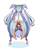
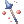
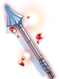
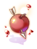
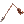
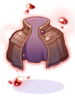
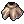
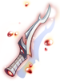
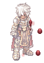
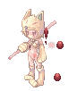

Illusion of Moonlight
Main Quest
| Requirements | |
|---|---|
| Base Level: | 100 |
| Starting Point: | |
| Rewards | |
| Experience: | 12,500,000 (Base) and 12,500,000 (Job) |
| Items: | 5  Illusion Stones Illusion Stones
|
- Speak with Payon Elder Saniul . She wants you to know if Muyeon is alright.
- You have to find the Young Scholar and talk with him. He can be found at the entrance of Payon Dungeon, at
@go 44or Warper > Dungeons > Payon Dungeon > Walk outside. You will be warped directly to the Detached Payon Palace if you choose to accompany him. - Go to the Detached Payon Palace and go inside. Then walk up in the next room and go to the right side. You'll find a group about to perform the ritual.
- Speak with Muyeon () and she tells you she's having nightmares.
- Speak with her again.
- Speak with her for a third time and choose Yes when she asks if you're ready to watch the fox bead being purged. A cutscene will happen and you will be warped inside the Payon Dungeon map.
- Examine the Shimmering Portal and watch another cutscene.
- Enter the Shimmering Portal to get inside the Illusion of Moonlight dungeon map.
- Speak with Scholar Chunghae at the entrance of the dungeon. He will want you to look for more clues.
- Speak with him again and accept his request to help him. You will have to defeat the The Wizard of Truth.
He is found at the bottom left of the map. If he is not alive, you will have to kill 5 Illusion Heros monsters.
You have now unlocked the No Mercy for Illusions! and the Remembering My Ancestors! daily quests. - Once you've defeated him, return to Scholar Chunghae at the entrance. He will reward you with 1 Illusion Stone and some experience.
You have now unlocked the Stop the Wizard! daily quest. It will already be on cooldown after you've completed the main quest. - Go back and talk to Muyeon inside the Detached Payon Palace. She'll reward you with 5 Illusion Stones and more experience.


Daily Quests
Stop the Wizard!
| Requirements | |
|---|---|
| Base Level: | 100 |
| Starting Point: | |
| Rewards | |
| Experience: | 12,500,000 (Base) and 12,500,000 (Job) |
| Items: | 1 Illusion Stone
|
- Speak with Scholar Chunghae and choose Will do. Accept his request.
- Kill the Wizard of Truth at the bottom left of the map.
- Return to Scholar Chunghae to get your reward.
Remembering My Ancestors!
| Requirements | |
|---|---|
| Base Level: | 100 |
| Starting Point: | |
| Rewards | |
| Experience: | 12,500,000 (Base) and 12,500,000 (Job) |
| Items: | 2 Illusion Stones
|
- Speak with Soldier Junghee and choose About the Angry Soldiers. Accept his request.
- Kill 20 Angry Soldiers in the map.
- Return to Soldier Junghee to get your reward.
No Mercy for Illusions!
| Requirements | |
|---|---|
| Base Level: | 100 |
| Starting Point: | |
| Rewards | |
| Experience: | 12,500,000 (Base) and 12,500,000 (Job) |
| Items: | 2 Illusion Stones
|
- Speak with Soldier Junghee and choose About the angry Nine Tails. Accept his request.
- Kill 20 Angry Nine Tails in the map.
- Return to Soldier Junghee to get your reward.
Daily Quest Reset

As an exclusive feature to NovaRO, you are able to reset all your daily quests cooldowns.
That means you are able to farm Illusion Stones as much as you want on a single character, without having to create additional characters to bypass the cooldown.
To do so, talk to Osmundi. He can be found inside one of the following locations:
- Illusion of Moonlight dungeon .
- Illusion of Vampire dungeon .
- Illusion of Frozen dungeon .
- Illusion of Abyss dungeon .
- Illusion of Teddy Bear dungeon .
- Illusion of Luanda dungeon .
- Illusion of Twins dungeon .
- Illusion of Labyrinth dungeon .
- Illusion of Underwater dungeon .
They are separated in 5 distinct difficulty groups. Each reset will award you with a set amount of:
- Tier 1: Illusion of Moonlight and Illusion of Frozen.
- Reset Reward:
 10 Illusion Stone and a choice between
10 Illusion Stone and a choice between  Moonlight Refine Box and
Moonlight Refine Box and  Frozen Refine Box
Frozen Refine Box
- Reset Reward:
- Tier 2: Illusion of Vampire and Illusion of Abyss
- Reset Reward: 12 Illusion Stone and a choice between
 Vampire Refine Box and
Vampire Refine Box and  Abyss Refine Box
Abyss Refine Box
- Reset Reward:
- Tier 3: Illusion of Teddy Bear and Illusion of Underwater - 1
- Reset Reward: 14 Illusion Stone and a choice between Teddy Bear Refine Box and
 Underwater Refine Box
Underwater Refine Box
- Reset Reward:
- Tier 4: Illusion of Luanda and Illusion of Twins
- Reset Reward: 16 Illusion Stone and a choice between
 Luanda Refine Box and
Luanda Refine Box and  Twins Refine Box
Twins Refine Box
- Reset Reward:
- Tier 5: Illusion of Labyrinth and Illusion of Underwater - 2
- Reset Reward: 22 Illusion Stone and a choice between
 Labyrinth Refine Box and Underwater Refine Box
Labyrinth Refine Box and Underwater Refine Box
- Reset Reward:
The first reset of the day, for each group, will give a 12 Illusion Stone bonus.
Once you complete the dailies of one of the Tiers above, you can reset them. After a reset, these quests will not give any experience until their original 24 hours cooldown pass.
Each Tier can be completed and reset separately, but you cannot reset dailies from a single Illusion Dungeon without completing the others in their respective group.
MVP Spawn
To spawn the Angry Moonlight MVP, you have to kill 1000 Angry Nine Tails. There will then be an announce on the map when she appears.
Illusion Gears
Speak with Gemcutter inside the Illusion of Moonlight map.
You need to equip the base item to be able to craft its Illusion counterpart.
More information about these Illusion Enchants can be found in this page.
| Image | Name | Description | Crafting |
|---|---|---|---|
|  | Illusion Puente Robe [1] | Reduce fixed casting time by 3%.
Increase heal effectiveness by 5%. Additional increase in heal effectiveness by 1% per refine rate. [+  Illusion Long Mace [2]]
Defense: 52 Weight: 40 Required Level: 99 Jobs: Every Job |
|
|  | Illusion Long Mace [2] | Reduces long ranged physical damage taken by 10%.
For every 2 refines, further reduces long ranged physical damage taken by 3%.
Attack: 185 Weight: 40 Weapon Level: 4 Required Level: 99 Jobs: Acolyte Class |
|

|
Illusion Nurse Cap [1] | Int + 1
Additional Int + 1 and increase in heal effectiveness by 3% per 2 refine rate. [+
Defense: 4 Location: Upper Weight: 10 Required Level: 99 Jobs: Acolyte Class |
|
|  | Illusion Apple of Archer [1] | DEX + 3
Additional DEX + 1 per 2 refine rate.
Defense: 1 Location: Upper Weight: 20 Required Level: 99 Jobs: Every Job except Novice |
 100 Broken Arrows |
|  | Illusion Muffler [1] | Max HP + 100, Max SP + 10.
Additional Max HP + 100 and Max SP + 5 per refine rate.
Defense: 8 Weight: 40 Required Level: 99 Jobs: Every Job except Novice |
 +7 Muffler [1]
|

|
Illusion Shoes [1] | Max HP + 100, Max SP + 10.
Additional Max HP + 100 and Max SP + 5 per refine rate.
Defense: 10 Weight: 40 Required Level: 99 Jobs: Every Job except Novice |
|

|
Illusion Spectral Spear [1] | Increase physical damage against shadow property, demon and undead race monsters by 20%.
Reduce damage taken from shadow property, demon and undead race monsters by 10%. Additional increase physical damage and reduce damage taken by 3% per 2 refine rate. Restore 50 HP when killing enemy with melee physical damage. Per 2 refine rate, additional restore 1 SP when killing enemy with melee physical damage. Has a chance to inflict confusion status on user. ASPD + 8%. If If the combined upgrade levels of If the combined upgrade levels of
Attack: 240 Weight: 200 Weapon Level: 4 Required Level: 99 Jobs: Swordsman Class |
|

|
Illusion Staff of Bordeaux [2] | MATK +180, INT +3, DEX +2.
When mastering For every 3 refines, further decrease the SP consumption of skills by 5% and increase MATK by 1%. Increases If If the combined upgrade levels of If the combined upgrade levels of
Attack: 60 Weight: 50 Weapon Level: 4 Required Level: 99 Jobs: High Mage Class |
|
|  | Illusion Moonlight Dagger [1] | Max SP + 10%.
Recovers 3 SP per physical melee hit. If refined to 10 or higher, recovers an additional 4 SP per hit.
Attack: 150 Weight: 70 Weapon Level: 4 Required Level: 99 Jobs: Swordsman Class, Mage Class, Archer Class, Merchant Class, Thief Class, Soul Linker, Ninja |

 +7
+7  100
100  +7
+7  +7
+7  100
100  +7
+7  100
100  +7
+7 


 +7
+7 


 +7
+7  +7
+7
Illusion Enchants
Illusion equipment can be enchanted. For details, see here.
Refine Box
Completing Daily Quest Reset rewards the player with a Refine Box that can upgrade (or sometimes downgrade) a +4 or higher illusion equipment from the matching dungeon to +7 ~ +10.
Defeating an illusion MVP rewards the MVP player (to be confirmed) by chance with a Special Refine Box that can upgrade (or sometimes downgrade) a +4 or higher illusion equipment from the matching dungeon to +9 ~ +12.
You can exchange 25 Refine Box of a single dungeon for 1 Special Refine Box of the same dungeon from Illusion Merchant NPC ().
Note that:
- The chance of getting each refine level is not uniform. For example, there is a significantly lower chance of getting +10 than getting +7 when using a regular Refine Box.
- An upgrade is not guaranteed. For example, using a Refine Box on a +9 illusion equipment may result in a downgrade to +7.
Monsters
| Image | Name | Level | HP | Size / Race / Element |
|---|---|---|---|---|

|
Cursed Munak | 110 | 17,728 | Medium / Undead / Undead 1 |

|
Cursed Bongun | 112 | 19,077 | Medium / Undead / Undead 1 |

|
Cursed Sohee | 114 | 22,414 | Medium / Demon / Water 2 |

|
Angry Soldier | 115 | 20,843 | Medium / Undead / Undead 1 |

|
Angry Nine Tail | 116 | 21,875 | Medium / Brute / Fire 3 |
|  | Illusion Hero | 117 | 24,078 | Medium / Undead / Undead 1 |

|
Wizard of Veritas | 118 | 121,847 | Medium / Undead / Shadow 1 |
|  | Angry Moonlight Flower
|
118 | 4,300,000 | Medium / Demon / Fire 3 |

Cards
| Card | Type | Effects |
|---|---|---|
| Weapon Card | Atk + 15
Matk + 15
| |
| Armor Card | Atk + 20
Matk + 20
| |
| Armor Card | Matk + 10
If refine rate is +10, Matk + 2%
| |
| Weapon Card | [+ Bow Weapons] Adds 3% to autocast
| |
| Armor Card | CRIT + 5
Increase critical damage by 10% If refine rate is +10 or higher, CRIT + 10
| |
| Headgear Card | ATK + 2%
Has 0.5% chance to cast | |
| Weapon Card | Matk + 25
Adds a 0.5% chance of making skills uninterrupted for 5 seconds when performing a magical attack. | |
| Armor Card | Enables the use of  Pressure Lv. 4 Pressure Lv. 4
|